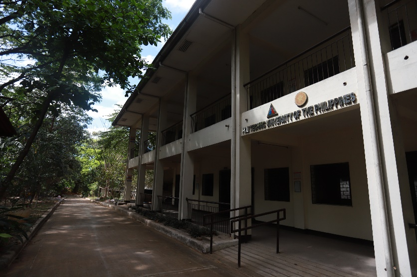
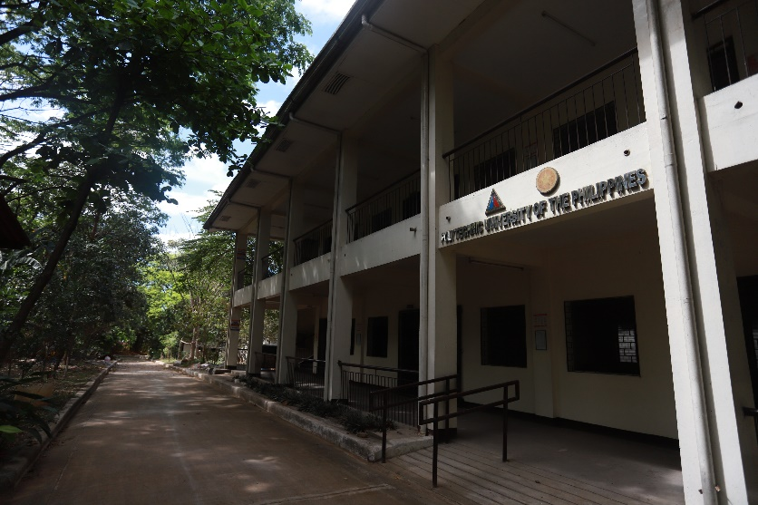

Academic Building
An academic building is a physical space designed and equipped to support various academic activities, including teaching, learning, research, and administration, and to provide a conducive environment for academic excellence and innovation.

PUP Pylon
Since 1987, the Pylon came to symbolized truth, excellence and wisdom.


Covered Gymnasium
A hall where games and physical training are held.


Interfaith Chapel
An Interfaith Chapel is a sacred space designed to provide a welcoming environment for people of all faiths and beliefs to come together for prayer, reflection, and meditation, fostering spiritual growth, understanding, and respect for diversity.


Rothlener Building
On July 29, 1997, PUP Quezon City was officially established during its formal launching on the very same grounds with the special presence of Mr. Rothlehner who himself was awarded the Plaque of Recognition by PUP President, Dr. Zenaida A. Olonan, together with other honored guests from the Local Government of Quezon City and PUP administration.

Misereor Building
Deed of Donation, whereby two (2) halls - Rothlehner and Misereor Building today in honor to their generosity and benevolence as funding-donors in which the two buildings were built


Audio Visual Room
The Audio-Visual Room is a specialized facility equipped with advanced multimedia technologies and resources to enhance the teaching and learning experience, facilitate presentations and lectures, and promote interactive and engaging learning activities.

Computer Laboratory
The Computer Lab Room is a dedicated facility equipped with state-of-the-art computing technologies and software, providing students with access to resources and tools for research, projects, and coursework, and promoting digital literacy and technological proficiency.

Entrance Gate
The gates to a brighter future.


Student Lounge
A student lounge is a designated area within the campus where students can relax, socialize, and engage in various recreational activities outside the classroom. It serves as a hub for student life, promoting a sense of community, connection, and well-being among the student population.


Learning Resource Center
The Learning Resource Center (LRC) serves as a hub of academic resources and services, providing students with access to various learning materials, technologies, and facilities to support their learning and research needs, and to promote lifelong learning.
Medical Clinic
The Medical Clinic is a facility equipped with medical professionals and resources to provide a range of health services and programs to promote and maintain the physical and mental well-being of students, faculty, and staff, and to support a healthy campus environment.